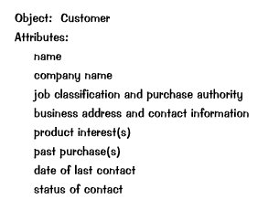
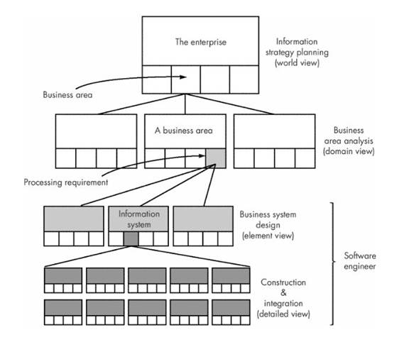
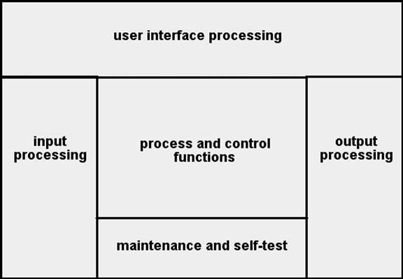
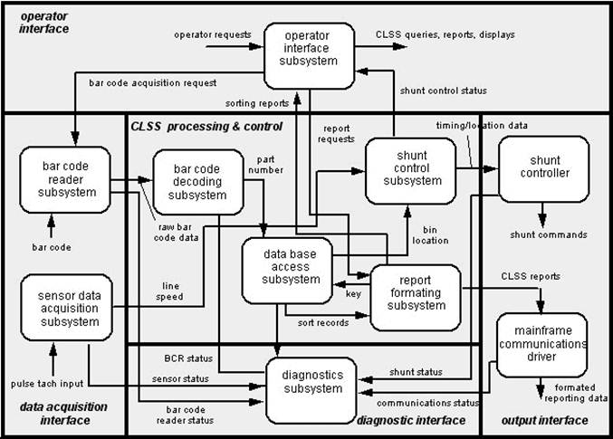
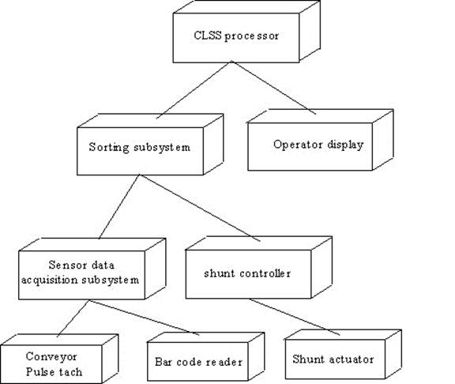
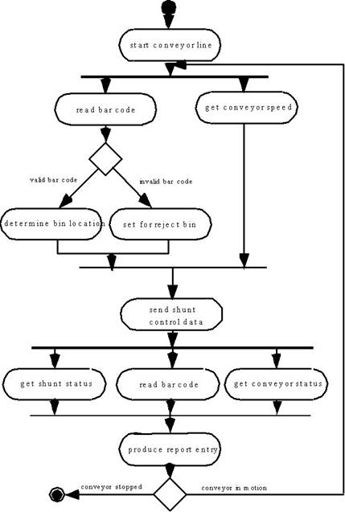
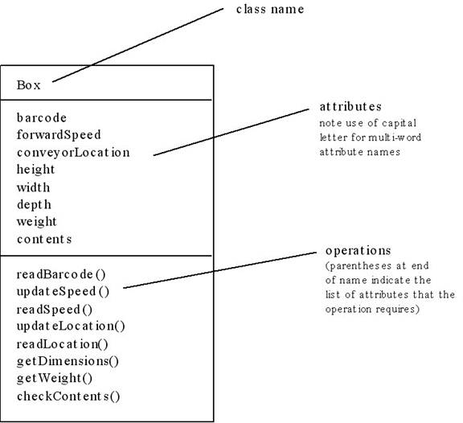
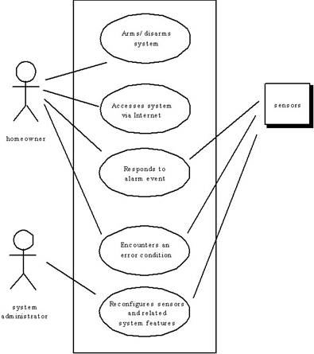
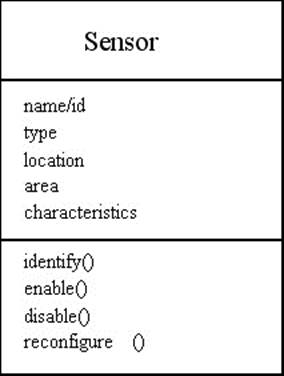
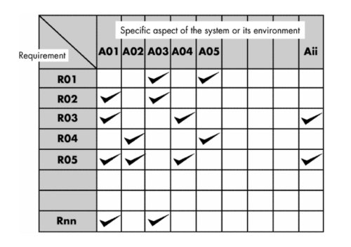

|
SE 616 Introduction to Software Engineering |
|
Lecture 3 |
System
Engineering (Chapter 6)
Definition of System:
Webster's Dictionary :
1. a set or arrangement of
things so related as to form a unity or organic whole.
2. a
set of facts, principles, rules, etc., classified and arranged in an orderly
form so as to show a logical plan linking the various parts.
3. a
method or plan of classification or arrangement.
4. an
established way of doing something; method; procedure.
Definition of Computer-based
System:
A set or arrangement of elements that are organized to
accomplish some predefined goal by processing information.
Components of a Computer-based System:
- Software. Computer programs, data structures, and related documentation that serve to effect the logical method, procedure, or control that is required.
- Hardware. Electronic devices that provide computing capability, the interconnectivity devices (e.g., network switches, telecommunications devices) that enable the flow of data, and electromechanical devices (e.g., sensors, motors, pumps) that provide external world function.
- People. Users and operators of hardware and software.
- Database. A large, organized collection of information that is accessed via software.
- Documentation. Descriptive information (e.g., hardcopy manuals, on-line help files, Web sites) that portrays the use and/or operation of the system.
- Procedures. The steps that define the specific use of each system element or the procedural context in which the system resides.
System
Engineer:
Defines the elements for a specific computer-based system in the context of
the overall hierarchy of systems (macro elements).
System Engineering
Hierarchy:

- Top-down and Bottom-Up Approaches to System Engineeing
- System engineer narrows the focus of work as it moves downward in the hierarchy
System
Modeling
System engineering is a modeling process. It
- Defines the processes that serve the needs of the view under consideration.
- Represents the behavior of the processes and the assumptions on which the behavior is based.
- Explicitly defines both exogenous and endogenous input to the model.
- Represents all linkages (including output) that will enable the engineer to better understand the view.
System Modeling Restraints
- Assumptions that reduce the number of possible permutations and variations.
- Simplifications that enable the model to be created in a timely manner.
- Limitations that help to bound the system.
- Constraints that guide the manner in which the model is created.
- Preferences that indicate the preferred architecture for all data, functions, and technology.
System Simulation
- Modeling and simulation tools enable a system engineer to "test drive" a specification of the system
Business
Process Engineering (BPE)
- Goal: to define architectures that will enable a business to use information effectively
- Kinds of Architectures
- data architecture
- framework for the information needs of a business or business function
- Building Blocks - Data Objects with attributes and relationships

- applications architecture
- those elements of a system that transform objects within the data architecture for some business purpose
- technology infrastructure
- the foundation for the data and application architectures encompassing hardware and software
Business Process Engineering
Modeling
Hierarchical Activity Structure - information strategy planning (ISP)

Information Strategy Planning
Management
issues
- define strategic business
goals/objectives
- isolate critical success factors
- conduct analysis of technology
impact
- perform analysis of strategic
systems
Technical
issues
- create a top-level data model
- cluster by
business/organizational area
- refine model and clustering
Defining
Objectives and Goals
- Objectivegeneral statement of
direction
- Goaldefines measurable
objective: reduce manufactured cost of our product
- Subgoals:
decrease reject rate by 20% in first 6
months
- gain 10% price concessions from
suppliers
- re-engineer 30% of components
for ease of manufacture during first year
- Objectives tend to be strategic
while goals tend to be tactical
Steps
in Business Process Engineering (BPE)
1. Business Area Analysis (BAA)
- Concerned with
- identifying detail data (in the form of entity [data object] types)
- identifying function requirements (in the form of processes) of selected business areas [domains] identified during ISP
- ascertaining their interactions (in the form of matrices)
- specifying what is required in a business area
- Outcome of BAA
- Isolation of areas of opportunity in which information systems may support business area
2. Business System Design (BSD)
- Modeling the basic requirements of a specific information system
- Requirements are translated into data architecture, applications architecture, and technology infrastructure.
3.
Application Engineering
- a.k.a ... software engineering
- modeling applications/procedures
that address (BAA) and constraints of ISP
4. Construction and Integration
- Focuses on implementation detail
- Architecture and infrastructure are implemented by:
- constructing an appropriate database and internal data structures
- building applications using software components
- by selecting appropriate elements of a technology infrastructure to support the design created during BSD.
- Each system component integrated to form a complete information system or application.
Product
Engineering
Goal:
- Translate the customer's desire for a set of defined capabilities into a working product
Process: Requirements Engineering
- Derive architecture and infrastructure
- Architecture encompasses: software, hardware, data, and people
- Establish a support infrastructure
- Structure includes: technology to tie the components together and the info that supports the components.
Execution:
- Overall requirements of the product are elicited from the customer.
- Encompasses:
- information and control needs
- product function and behavior
- overall product performance
- design and interfacing constraints
- other special needs
- Allocate function and behavior to each of the four system components
- Begin system component engineering
- concurrent activities encompassing
- software engineering
- hardware engineering
- human engineering
- database engineering
- establish interfacing mechanisms among systems

Product
Architecture Template

Architecture Flow
Diagram

System Modeling
with UML
Deployment
diagrams
- Each 3-D box depicts a hardware
element that is part of the physical architecture of the system

Activity diagrams
- Represent procedural aspects of a
system element

Class diagrams
- Represent system level elements
in terms of the data that describe the element and the operations that
manipulate the data

Requirements
Engineering (Chapter 7)
Goal
Ensure that a system that properly meets the customer's needs and satisfies the customer's expectations has been specified
Process:
Inceptionask a set of questions that establish
- basic understanding of the
problem
o the people who want a solution
- the nature of the solution that
is desired, and
- the effectiveness of preliminary
communication and collaboration between the customer and the developer
Elicitationelicit requirements from all
stakeholders
Elaborationcreate an analysis model that
identifies data, function and behavioral requirements
Negotiationagree on a deliverable system that is
realistic for developers and customers
Specificationcan be any one (or more) of the
following:
- A written document
- A set of models
- A formal mathematical
- A collection of user scenarios
(use-cases)
- A prototype
Validationa review mechanism that looks for
- errors in content or
interpretation
- areas where clarification may be
required
- missing information
- inconsistencies (a major problem
when large products or systems are engineered)
- conflicting or unrealistic
(unachievable) requirements.
Requirements
management
Inception
Identify
stakeholders
- who else do you think I should
talk to?
Recognize
multiple points of view
Work
toward collaboration
The first questions
- Who is behind the request for
this work?
- Who will use the solution?
- What will be the economic benefit
of a successful solution
- Is there another source for the
solution that you need?
Requirements
Elicitation
- Issues in defining requirements
- Problems of scope.
- Problems of understanding.
- Problems of volatility.
- Guidelines for requirements elicitation
- Assess the business and technical feasibility for the proposed system.
- Identify the people who will help specify requirements and understand their organizational bias.
- Define the technical environment (e.g., computing architecture, operating system, telecommunications needs) into which the system or product will be placed.
- Identify "domain constraints" (i.e., characteristics of the business environment specific to the application domain) that limit the functionality or performance of the system or product to be built.
- Define one or more requirements elicitation methods (e.g., interviews, focus groups, team meetings).
- Solicit participation from many people so that requirements are defined from different points of view; be sure to identify the rationale for each requirement that is recorded.
- Identify ambiguous requirements as candidates for prototyping.
- Create usage scenariosto help customers/users better identify key requirements
- Work Products Produced
- A statement of need and feasibility.
- A bounded statement of scope for the system or product.
- A list of customers, users, and other stakeholders who participated in the requirements elicitation activity.
- A description of the system's technical environment.
- A list of requirements (preferably organized by function) and the domain constraints that apply to each.
- A set of usage scenarios that provide insight into the use of the system or product under different operating conditions.
- Any prototypes developed to better define requirements.
Use-Cases
A
collection of user scenarios that describe the thread of usage of a system
Each
scenario is described from the point-of-view of an actora person or device
that interacts with the software in some way
Each
scenario answers the following questions:
o Who is the primary actor, the
secondary actor (s)?
o What are the actors goals?
o What preconditions should exist before
the story begins?
o What main tasks or functions are
performed by the actor?
o What extensions might be considered as
the story is described?
o What variations in the actors
interaction are possible?
o What system information will the actor
acquire, produce, or change?
o Will the actor have to inform the
system about changes in the external environment?
o What information does the actor desire
from the system?
o Does the actor wish to be informed
about unexpected changes?
Use-Case Diagram

Building the
Analysis Model
Elements
of the analysis model
Scenario-based
elements
o Functionalprocessing narratives for
software functions
o Use-casedescriptions of the
interaction between an actor and the system
Class-based
elements
o Implied by scenarios
Behavioral
elements
o State diagram
Flow-oriented
elements
o Data flow diagram
Class Diagram

State Diagram

Analysis Patterns
Pattern
name: A descriptor that captures the essence of the
pattern.
Intent: Describes what the pattern
accomplishes or represents
Motivation: A scenario that illustrates how the pattern
can be used to address the problem.
Forces and
context: A description of external issues
(forces) that can affect how the pattern is used and also the external issues
that will be resolved when the pattern is applied.
Solution:
A description of how the pattern is applied to solve the problem with an
emphasis on structural and behavioral issues.
Consequences:
Addresses what happens when the pattern is applied and what trade-offs
exist during its application.
Design:
Discusses how the analysis pattern can be achieved through the use of
known design patterns.
Known
uses: Examples of uses within actual systems.
Related
patterns:
One or more analysis patterns that are related to the named pattern because
- it is commonly used with the named
pattern;
- it is structurally similar to the named
pattern;
- it is a variation of the named pattern.
Requirements Analysis and Negotiation
- Analysis - (CheckList)
- categorizes requirements and organizes them into related subsets
- Explores each requirement in relationship to others
- Examines requirements for consistency, omissions, and ambiguity
- Ranks requirements based on the needs of customers/users
- Questions asked and Answered (Checklist)
- Is each requirement consistent with the overall objective for the system/product?
- Have all requirements been specified at the proper level of abstraction?
Do some requirements provide a level of technical detail that is inappropriate at this stage?
- Is the requirement really necessary or does it represent an add-on feature that may not be essential to the objective of the system?
- Is each requirement bounded and unambiguous?
- Does each requirement have attribution?
Is a source (generally, a specific individual) noted for each requirement?
- Do any requirements conflict with other requirements?
- Is each requirement achievable in the technical environment that will house the system or product?
- Is each requirement testable, once implemented?
Requirements Specification
- Final work product produced by the system and requirements engineer
- Foundation for hardware engineering, software engineering, database engineering, and human engineering.
- Describes the function and performance of a computer-based system and the constraints that will govern its development
- Bounds each allocated system element
System Modeling
- Attempts to create a meaningful model of the system
Requirements Validation
- Examines the specification to ensure:
- that all system requirements have been stated unambiguously
- that inconsistencies, omissions, and errors have been detected and corrected
- that work products conform to the standards established for the process, the project, and the product.
- Formal technical review: primary requirements validation mechanism
- Review Team:
- system engineers
- customers
- users
- other stakeholders
- Examine the system specification: look for
- errors in content or interpretation
- areas where clarification may be required
- missing information
- inconsistencies
- conflicting requirements
- unrealistic (unachievable) requirements.
- Examine each requirement against a set of checklist questions:
- Are requirements stated clearly? Can they be misinterpreted?
- Is the source (e.g., a person, a regulation, a document) of the requirement identified?
- Has the final statement of the requirement been examined by or against the original source?
- Is the requirement bounded in quantitative terms?
- What other requirements relate to this requirement? Are they clearly noted via a cross-reference matrix or other mechanism?
- Does the requirement violate any domain constraints?
- Is the requirement testable? If so, can we specify tests (sometimes called validation criteria) to exercise the requirement?
- Is the requirement traceable to any system model that has been created?
- Is the requirement traceable to overall system/product objectives?
- Is the system specification structured in a way that leads to easy understanding, easy reference, and easy translation into more technical work products?
- Has an index for the specification been created?
- Have requirements associated with system performance, behavior, and operational characteristics been clearly stated? What requirements appear to be implicit?
Requirements Management
- Set of activities that help the project team to identify, control, and track requirements and changes to requirements at any time as the project proceeds.
- Identifies each requirement and assigns it a unique identifier
e.g. <requirement type><requirement #>
where
<requirement
type> takes on values such as
F = functional requirement
D = data requirement
B = behavioral requirement
I = interface requirement
P = output requirement
Hence, a requirement identified as F09 indicates a functional requirement assigned requirement number 9.
- Traceability tables are then developed
